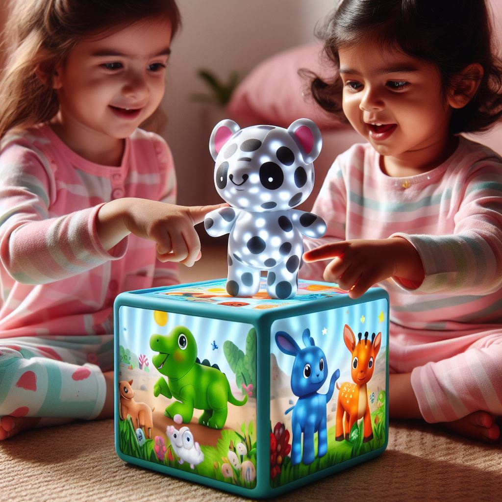
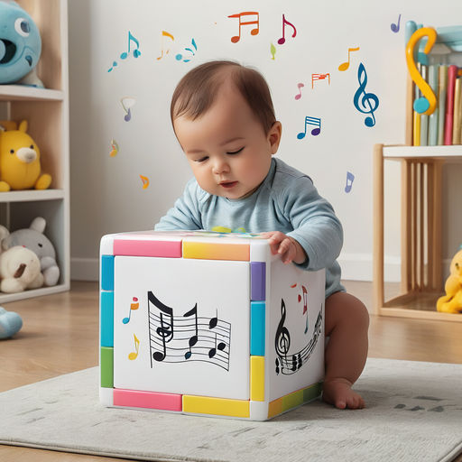

BabyMagic
A babyMagic não é apenas um cubo.O primeiro brinquedo interativo de realidade aumentada para o desenvolvimento do seu bebê.O cubo é feito de material macio, para não machucar o seu bebê
MODELOS MAGICOS
-

MagicAnimal's -
MagicGeometric -

MagicMusic
MagicAnimal's
A magicAnimal tem animais que quando apertados é criado um holograma do animal, mostrando ele em 3D, assim tendo uma interação com o bebê.
Magic Geometric
A magicGeomatric tem formas geométricas que quando apertados é criado um holograma da forma, mostrando ele em 3D, assim o bebê observa todos os lados.
As musicas são escolhidas pelos os pais atraves do nosso aplicatico
Magic Song
A magicMusic tem notas musicais que quando apertados é criado um holograma das notas musicas, tocando as musicas que o seu bebê mais ama.
A babyMagic é indicado para bebês de 6 meses - 2 anos
Benificios
Estimula o desenvolvimento sensorial e cognitivo do bebê
Promove a interação e a exploração
Desperta a curiosidade e a criatividade
Ajuda no desenvolvimento da linguagem
É um brinquedo seguro e educativo